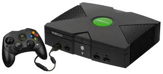

(Direct)X box
The notion that Microsoft should develop its own gaming console began gaining traction way back in 1998, with Kevin Bachus, Seamus Blackley, Otto Berkes, and Ted Hase forming the software giant’s first console team after successfully pitching their idea to Bill Gates. Originally dubbed the DirectX Box, the console was intended to be the first game system built like a PC, bringing all of the flexibility and power of a gaming rig to the console market.
The system would run on Windows 2000, making it easy for traditional PC software developers to work within the console’s architecture, and feature more than twice the processing power of the industry-leading PlayStation 2. Despite the marketing team’s belief that the abbreviated “Xbox” name wouldn’t fly, the label went over well with focus groups, providing the company with one of the final elements it needed to pull back the curtain on its creation: A catchy name.... Find out more
Introducing Xbox Live
The integrated Xbox Live service launched in November 2002 allowed players to play games online with or without a broadband connection. It first competed with Dreamcast's online service but later primarily competed with PlayStation 2's online service. Although these two are free while Xbox Live required a subscription, as well as broadband-only connection which was not completely adopted yet, Xbox Live was a success due to better servers, features such as a buddy list, and milestone titles like Halo 2 released in November 2004, which is the best-selling Xbox video game and was by far the most popular online game for the system.
